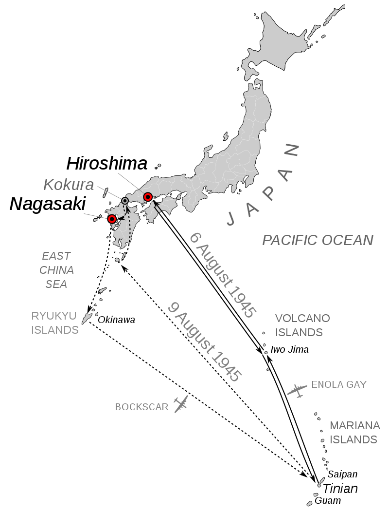
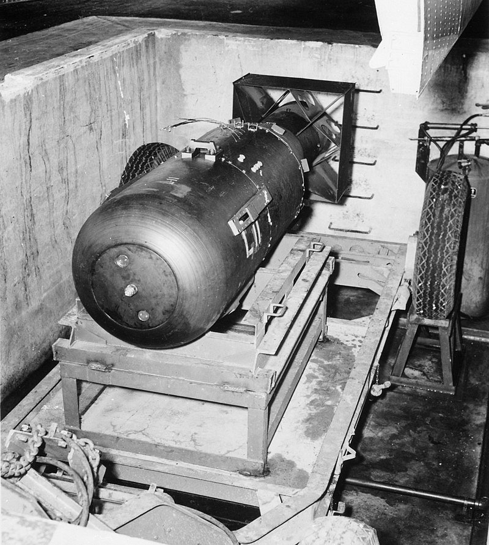
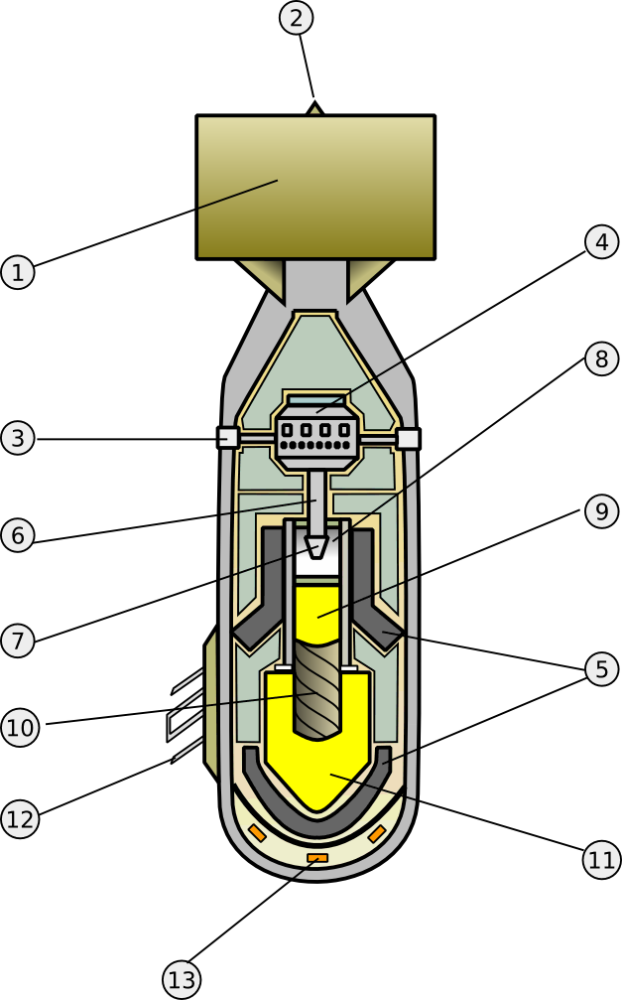
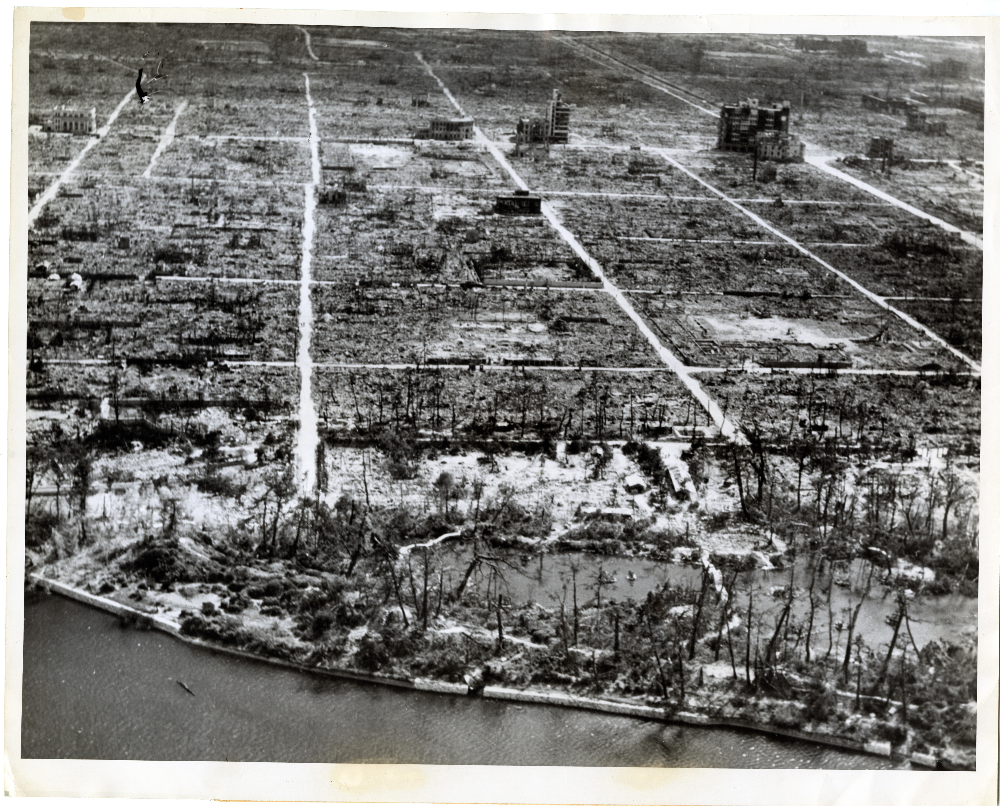
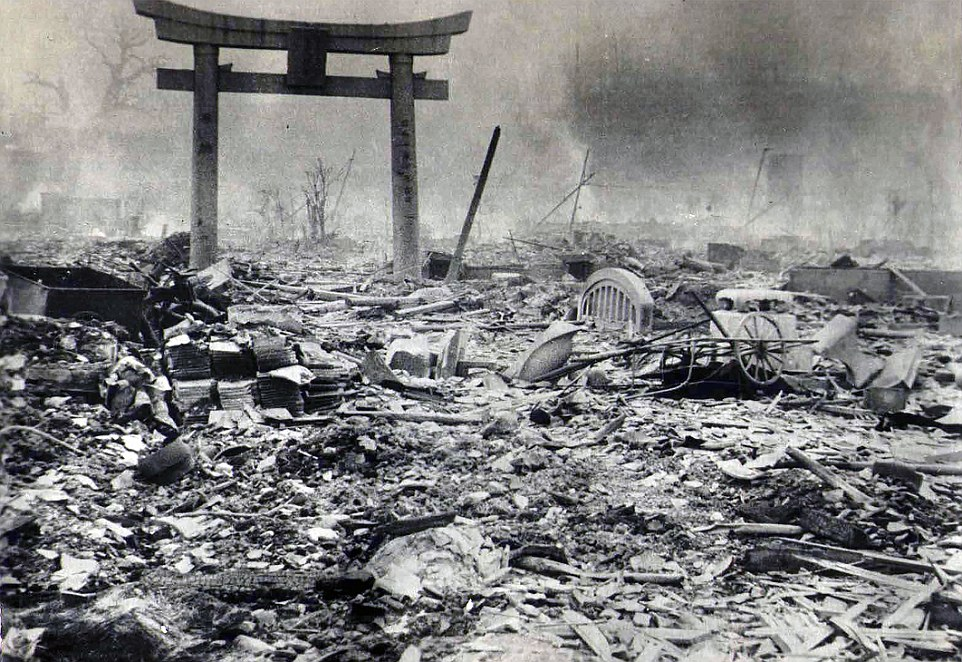
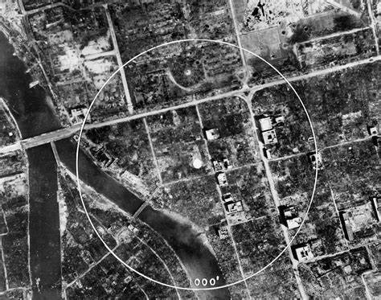

 A japán város, Hirosima bombázása a második világháborút lezáró egyik katonai művelet volt 1945-ben. A bombázást az amerikai légierő hajtotta végre, és mindmáig ez, és a Nagasakiban történt eset az egyedüli példa nukleáris fegyverek háborús alkalmazására.
A japán városokat leromboló gyújtóbombás hadművelet után a szövetséges erők már Japán inváziójára készültek.
A háború az európai hadszíntéren véget ért, amikor a náci Németország 1945. május 8-án aláírta a fegyverletételi nyilatkozatot, de a csendes-óceáni hadszíntéren tovább folyt.
Az Egyesült Királysággal és a Kínai Köztársasággal karöltve, július 26-án az Amerikai Egyesült Államok a potsdami nyilatkozatban határozottan felszólította a japán fegyveres erőket a feltétel nélküli megadásra, „gyors és teljes pusztulással” fenyegetve, ám ezt a szigetország kormánya figyelmen kívül hagyta.
 Az Amerikai Egyesült Államok légi erejének egy B-29-ese, az Enola Gay dobta az atombombát Hirosimára. A bomba urán 235-ös izotópon alapuló fissziós (maghasadás elvű), körülbelül 15 kilotonna robbanó erővel rendelkező atomfegyver volt, „puska” típusú bombának megépítve.
Súlya 4400 kg, hosszúsága 3 m, és átmérője 71 cm volt. A bombát a Los Alamos Nemzeti Laboratórium tervezte.
 Az atombombák, vagy fissziós bombák energiájukat a nehézatommagok hasadásából nyerik: nehéz atommagok (urán vagy plutónium) hasadnak könnyebb elemekké neutronokkal való besugárzásuk révén (ezek az elemek hasadásukkor újabb neutronokat hoznak létre, melyek újabb atommagokat bombáznak, láncreakciót eredményezve). Ezeket történelmi okokból atombombának nevezzük. Az elnevezés nem pontos, mivel a kémiai reakciók szabadítanak fel energiát atomok kapcsolódásából, nem a hasadás, valamint a fúzió (a könnyű atommagok egyesülése) sem kevésbé atomi jellegű, mint a maghasadás (fisszió). E lehetséges félreértés ellenére az atombomba kifejezést széles körben használják kimondottan a nukleáris fegyverekre, s leginkább a fissziós bombákra. Az atombombák méretét nem lehet tetszőlegesen növelni, mivel egy kritikus tömeg felett külső hatás nélkül is beindul bennük a láncreakció.
 Az amerikaiak éppen az Új-Mexikói sivatagban tesztelték az első atombombát, amikor az Egyesült Államok, az Egyesült Királyság és Kína határozottan megfenyegette Japánt, hogy vagy visszavonul, vagy hirtelen és elsöprő pusztítással kell szembenéznie. Kantaro Szuzuki, a japán miniszterelnök kijelentette, hogy a japán kormány nem vesz tudomást a figyelmeztetésről, és tovább igyekszik a háború sikeres lezárása felé.
1945. július 26-án a USS Indianapolis (Portland osztályú nehézcirkáló) a bombát elszállította a Tinian szigetén lévő amerikai bázisra. Két nappal később Marshall tábornok, az amerikaiak hadvezére megerősítette a Japán elleni használatra kiadott parancsot. A támadások idején 350.000 civil élt a városban.
 A bombát 9 km-es magasságból dobták le, és 600 méterrel a város felett robbant fel mintegy 15.000 tonna TNT erejével. Az atombombának jóval nagyobb volt a pusztító hatása, mint a korábban alkalmazott hagyományos bombáknak.
A vakító villanással és gombafelhővel kísért atombomba-robbanás a halottak és a romok városává tette Hirosimát. Az atomtámadás 140 ezer ember életét követelte, 70 ezer ember azonnal meghalt, a többiek pedig később, a sugárzás okozta betegségek következtében, amely ma is érezteti hatását. 
A következő hónapokban számtalan ember halt bele a sugárbetegségbe, az égési sérülésekbe, és az egyéb sebesülésekbe, vagy a sugárzás következtében kialakult egyéb betegségekbe. Bár Hirosimának volt jókora helyőrsége is, mindkét városban többségükben civilek vesztették életüket.
- 1944
- 1945
- 1946
fasz